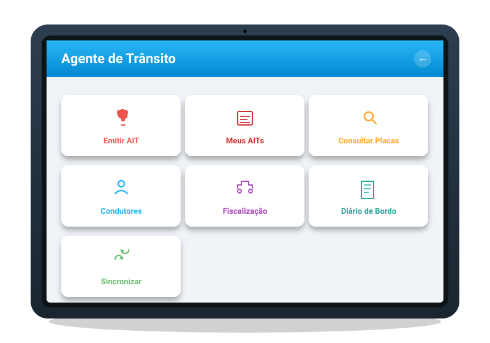
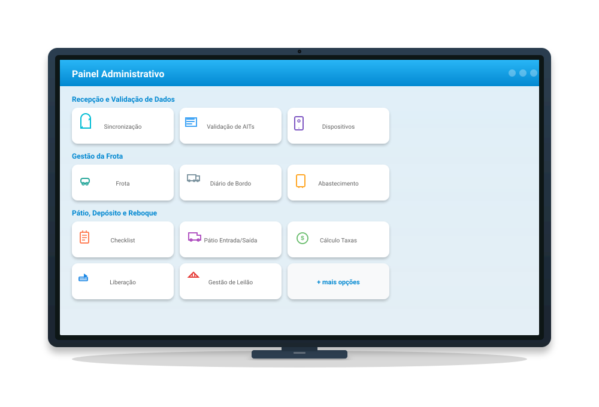
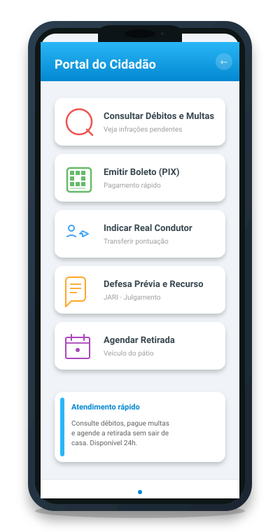

Três Módulos Integrados
Do campo à gestão, do atendimento ao cidadão — uma cadeia completa de fiscalização e serviços de trânsito, com dados sincronizados e processos juridicamente válidos.

Aplicativo do Agente
Em campo com tecnologia
App mobile para tablets e smartphones dos agentes de trânsito. Emissão de AITs completa, com captura de evidências, OCR de placas e operação offline.
- 📋Emitir AIT (Auto de Infração): formulário guiado com veiculo, infração, condutor, evidências e assinatura
- 📃Meus AITs: histórico de autos emitidos pelo agente, com reimpressão via Bluetooth
- 🔍Consultar Placas: busca de veículos com leitura automática via câmera e OCR (ML Kit)
- 👥Consultar Condutores: consulta de CNH, ocorrências e pontuação por CPF
- 🚖Fiscalização Reboque: registro de remoção de veículos ao pátio, com checklist de avarias e fotos
- 📖Diário de Bordo: registro de km e turno por viatura, vinculado à escala
- 🔄Sincronizar: envio da fila offline para a central, automático ao detectar internet

Painel Administrativo
Gestão central completa
Web/desktop para supervisores e gestores da central. 7 módulos integrados cobrindo todo o ciclo de fiscalização, pátio, finanças, pessoal e BI.
- 📡Sincronização em tempo real: dashboard da fila de envios dos agentes, com retentativas automáticas
- 📱Gestão de Dispositivos (MDM): autorizar tablets, bloquear e enviar comando de limpeza remota
- ✅Validação de AITs: homologação com visualização de fotos, GPS, vídeos e assinatura do condutor
- 🚗Gestão da Frota: cadastro de viaturas, abastecimento, km/L, diário de bordo e manutenções
- 🅿️Pátio e Leilão: entrada/saída, checklist de remoção, cálculo de diárias, leilão após 60 dias
- ⚖️JARI: cadastro de membros, protocolo, pareceres e julgamento de defesas/recursos
- 💰Financeiro: emissão de DAM (boleto/PIX), conciliação bancária automática
- 📊BI e Mapa de Calor: dashboard financeiro, produtividade dos agentes, mapa de ocorrências por GPS

Portal do Cidadão
Atendimento sem sair de casa
App mobile para cidadãos consultarem débitos, pagarem multas (PIX), indicarem condutor real, recorrerem e agendarem retirada de veículos.
- 🔍Consultar Débitos e Multas: busca por placa, com detalhes da infração, valor e prazo
- 📱Emitir Boleto (PIX): geração de QR Code PIX e código de barras para pagamento imediato
- 🔁Indicar Real Condutor: transferência de pontuação da CNH, com prazo legal de 30 dias
- 📄Defesa Prévia e Recurso: protocolar defesa na JARI com consulta do AIT e upload de documentos
- 📅Agendar Retirada: marcar horário para retirar veículo do pátio mediante baixa de débitos
24+
Telas do Painel Administrativo
7
Módulos Integrados
100%
Offline-First
NTP
Timestamp Jurídico